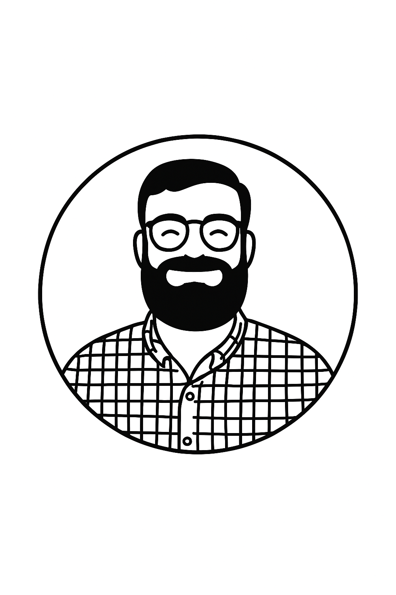
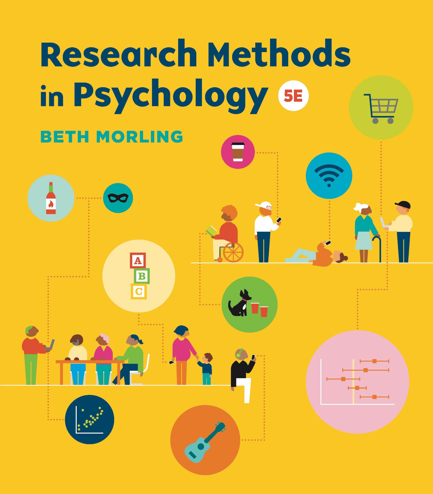
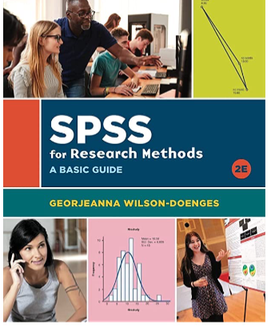

Research Methods
Course Basics
Lecture Tue/Thu 1:40–2:55 PM · Lab Wed 10:50–11:40 AM
Whitman Hall 253. Prerequisite: PSY 348 or permission from the Department Chairperson.
Hi, I’m Dave!

My research focuses on how we view and interact with other individuals — specifically, how we classify things as creepy, and why we sometimes seek out negative or morbid content (morbid curiosity).
Email Me!
brockeda@farmingdale.edu
Please make sure your email has a subject line, a greeting, and your name.
Office Hours
Knapp Hall, Room 15 (and virtually)
| Day | Time | Format |
|---|---|---|
| Monday | 11:45 AM – 12:45 PM | In-person, Knapp Hall 15 |
| Tuesday | 8:30 AM – 10:30 AM | Virtual |
| Thursday | 9:00 AM – 11:00 AM | In-person, Knapp Hall 15 |
Who Are You?
Pause and Discuss
Take a minute — introduce yourself to the people near you. What’s your major, and what made you curious about research?
Course Website
All materials, assignments, and grades for this course live on Brightspace.
Required Materials
Textbook

Research Methods in Psychology, 5th edition (2025), by Beth Morling.
ISBN: 978-1-324-08574-4
Recommended Materials (Optional)

SPSS for Research Methods — A Basic Guide, 2nd edition (2021), by Georjeanna Wilson-Doenges. Included with the textbook package.
ISBN: 978-0-393-88478-4
Course Structure
Lecture
Research methodology — exams, ethics training, extra credit
Lab
A scientific-writing workshop: your group’s original research report, one section at a time
The Lecture Component
3 Exams
25 pts each, 50 multiple-choice questions each. Make-up exams (essay format) are available only for well-documented medical or family emergencies — email me to confirm eligibility first.
IRB Ethics Training
Mandatory. Complete the CITI “Advanced Social/Behavioral Research” course and upload your certificate to Brightspace before data collection.
Extra Credit (Optional)
Participant Pool: up to 4 pts. Kahoot review games before each exam: up to 5 pts.
Grading — Lecture (85 pts)
| Activity/Assignment | Possible Points |
|---|---|
| IRB (CITI) Ethics Training and Certificate | 10 |
| Exams 1–3 | 75 |
| Participant Pool Extra Credit (optional) | up to 4 |
| Kahoot Extra Credit (optional) | up to 5 |
The Lab Component
Group Research Project
In a group, you will design and run a novel psychology experiment — and present it to the class (ungraded) before data collection begins.
13 Lab Assignments
Draft-then-final pairs building each section of an APA-style research report, one at a time.
Grading — Lab (108 pts)
| Assignment | Points | Assignment | Points |
|---|---|---|---|
| Group Experiment Planning Worksheet | 3 | Method Section | 5 |
| Two Annotated References | 5 | Results Draft | 3 |
| Final Topic & Annotated Bibliography | 5 | Results Section | 5 |
| Outline Draft | 3 | Discussion Draft | 3 |
| Final Outline | 5 | Discussion Section | 5 |
| Introduction Draft | 3 | Final Paper | 55 |
| Introduction Section | 5 | ||
| Method Draft | 3 |
Final Grades
Your total grade is out of 193 points (85 lecture + 108 lab), plus up to 9 points of optional extra credit.
A Word on AI
Permissible, With Attribution
You’re permitted and encouraged to use AI tools like ChatGPT on assignments — with proper attribution, and full responsibility for your submission’s accuracy and quality.
A Word on AI
Best Practices
- Thoroughly review AI output for relevance, depth, inaccuracies, bias, plagiarism, and copyright issues
- Never input another person’s likeness, voice, or private information into an AI tool
- Never upload copyright-protected or paywalled content
- Cite AI as a reference whenever its output is used, quoted, or paraphrased
How to Do Well in This Class
Pause and Discuss
What’s worked for you in past classes that you’ll bring into this one?